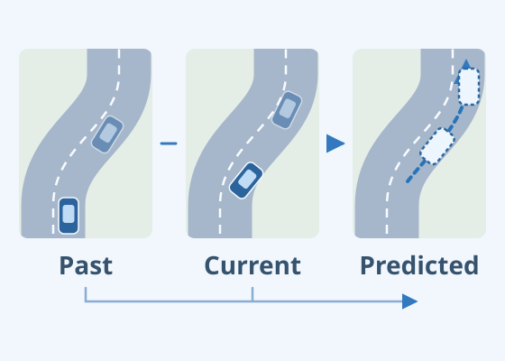
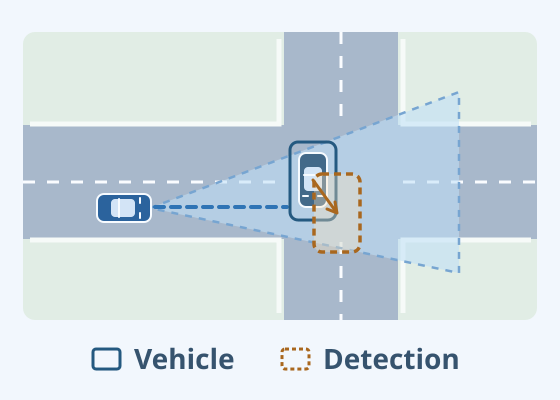
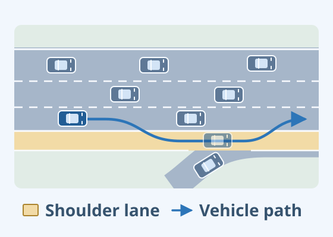

Research

Geographic Generalization in End-to-End Planning at Worldwide Scale
Sept 2026 – PresentSemester Project, VITA Lab, EPFL | Swiss AI Initiative
Supervisor: Valentin Gerard, Prof. Alexandre Alahi
Project Overview: Developing a benchmark as part of a broader research effort to build geographically generalizable world models for autonomous driving. Implementing a modular, configuration-driven evaluation framework with model-specific adapters, supporting video-to-trajectory reconstruction, direct trajectory prediction, and configurable prediction horizons through model-specific rollout strategies. The framework is designed to analyze geographic generalization across existing world models, video-action/VLA models, and end-to-end planners, while supporting future evaluation of the world model developed by the research team.

Pushing the Limits of State-of-the-Art End-to-End Driving Planners
Feb 2026 – June 2026Semester Project, VITA Lab, EPFL
Supervisor: Lan Feng, Prof. Alexandre Alahi
Project Overview: Extended DrivoR (NAVSIM-v2 leaderboard SOTA) with two temporal modules: a cached temporal token fusion mechanism using asymmetric cross-attention over historical register tokens, and a future scene token predictor inspired by latent world models, trained end-to-end without auxiliary supervision. Trained on the navmini subset due to compute constraints; best configuration improved EPDMS by 23% over the DrivoR baseline, with full-scale validation on navtrain as future work.

Autonomous Vehicles Test Scenario Generation in Perception-Limited Environments
Nov 2024 – June 2025BS Thesis Research, Southeast University, China; Supported by a Jiangsu Provincial Science and Technology Project
Supervisor: Prof. Chen Wang
Project Overview: Developed a perception-limited test scenario generation framework for autonomous vehicles to address the overlooked impact of sensor errors in scenario-based testing. Extracted distance and velocity perception-error distributions from the nuScenes dataset using a BEVFusion multi-sensor fusion model, and modeled them as sensor noise to simulate perception-limited environments. Quantified the safety risks induced by perception errors and integrated them into a reinforcement learning–based scenario generation pipeline to guide the creation of critical perception-limited scenarios. Evaluated generated scenarios across realism, adversarial strength, and diversity. The proposed method generated more realistic and diverse safety-critical scenarios than perception-agnostic baselines.
Research outcome: First-author paper accepted to IEEE ITSC 2026.

Control of Connected and Autonomous Vehicles Utilizing Road Shoulder Lane Based on Deep Reinforcement Learning
Oct 2022 – Oct 2023Student Research Training Program, Southeast University, China
Supervisor: Prof. Min Yang
Project Overview: Developed a DQN-based control strategy for connected and autonomous vehicles using highway shoulder lanes, constructing SUMO simulations of a real expressway merging section to evaluate the strategy under mixed traffic conditions.